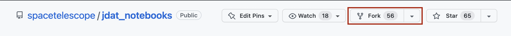

GitHub 设置#
GitHub 账户#
GitHub 是一个提供软件开发和版本控制的互联网托管服务，使用 Git 进行版本控制。 它提供了 Git 的分布式版本控制和源代码管理功能，以及其自身的特性。 如果您还没有 GitHub 账户，请访问 GitHub 的 注册页面。
仓库设置#
步骤 1：分叉 STScI 仓库
第一步是创建 STScI jdat_notebooks 仓库的 GitHub 副本。 您在 GitHub 账户上的复制仓库称为“分叉”。要创建分叉，请点击 STScI 的 jdat_notebooks 仓库右上角的 ``fork`` 按钮。会弹出一个对话框，您可以选择您的 GitHub 账户来创建分叉。
{kind=link}
步骤 2：克隆仓库
在您创建了 STScI 仓库的分叉后，您现在应该在您的 GitHub 账户下有一个 STScI 仓库的副本。
下一步是将您和 STScI 的 GitHub 仓库的副本复制到您的本地计算机上。这样，您可以在计算机上进行编辑，并将更改发送到您的在线仓库（分叉）。创建本地副本的过程称为 克隆。要克隆 jdat_notebooks 仓库，请打开终端窗口并 cd 进入您希望保存本地副本的目录。然后运行以下 bash 命令：
# 克隆仓库
git clone https://github.com/<your_github_username>/jdat_notebooks
# cd 进入本地仓库（克隆）
cd jdat_notebooks
# #这将设置 origin 指向您的分叉，目前与主 spacetelescope “上游” 仓库没有连接。因此，您可以通过以下方式将本地克隆指向正确的仓库：
git remote add upstream https://github.com/spacetelescope/jdat_notebooks.git
步骤 3：检查远程 URL
此时，您已完成本地克隆仓库的设置。要检查设置是否成功，请运行以下命令以列出 URL：
# 列出远程 URL
git remote -v
这应该返回：
<your_github_username> https://github.com/<your_github_username>/jdat_notebooks.git (fetch)
<your_github_username> https://github.com/<your_github_username>/jdat_notebooks.git (push)
upstream https://github.com/spacetelescope/jdat_notebooks.git (fetch)
upstream https://github.com/spacetelescope/jdat_notebooks.git (fetch)
步骤 4：创建新分支
接下来，创建一个新分支并为其命名。您可以将新分支命名为与您的笔记本相关的任何名称。 最好使用一个简短的名称，因为您需要在终端中频繁输入它。通过运行以下命令来完成：
git checkout -b <branch_name>
这将自动将当前分支更改为新分支； 它将保持在此分支上，直到您手动更改或创建一个新分支。
Tip
要切换到已存在的分支，请运行 git checkout <branch_name>
步骤 5：将新分支与 STScI 同步
您应该更新分支，以确保它与 STScI 的 main 分支同步。为此，请运行：
# 获取更改
git fetch upstream main
# 拉取（下载）更改
git pull upstream main